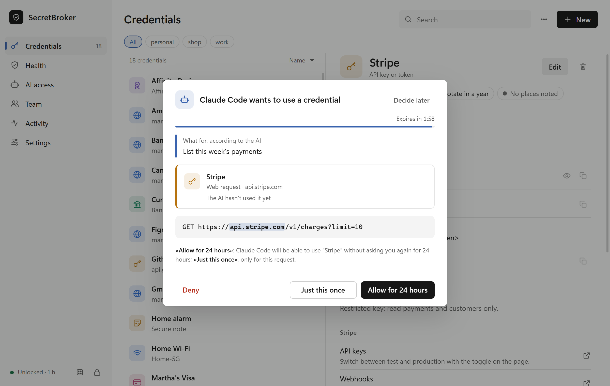
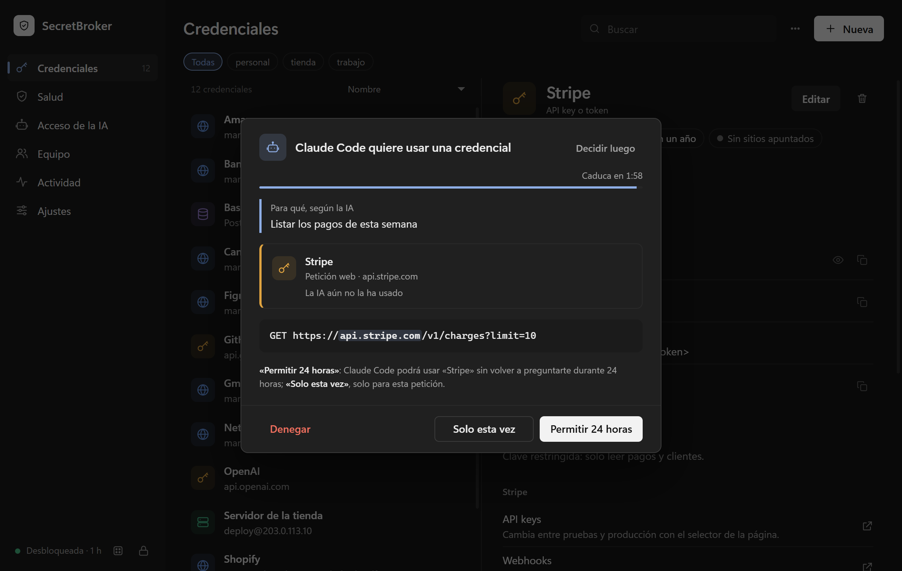
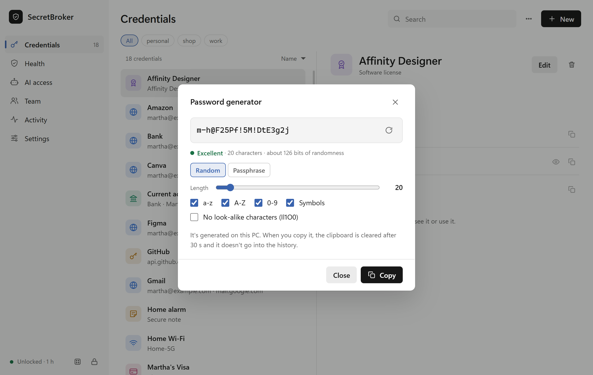
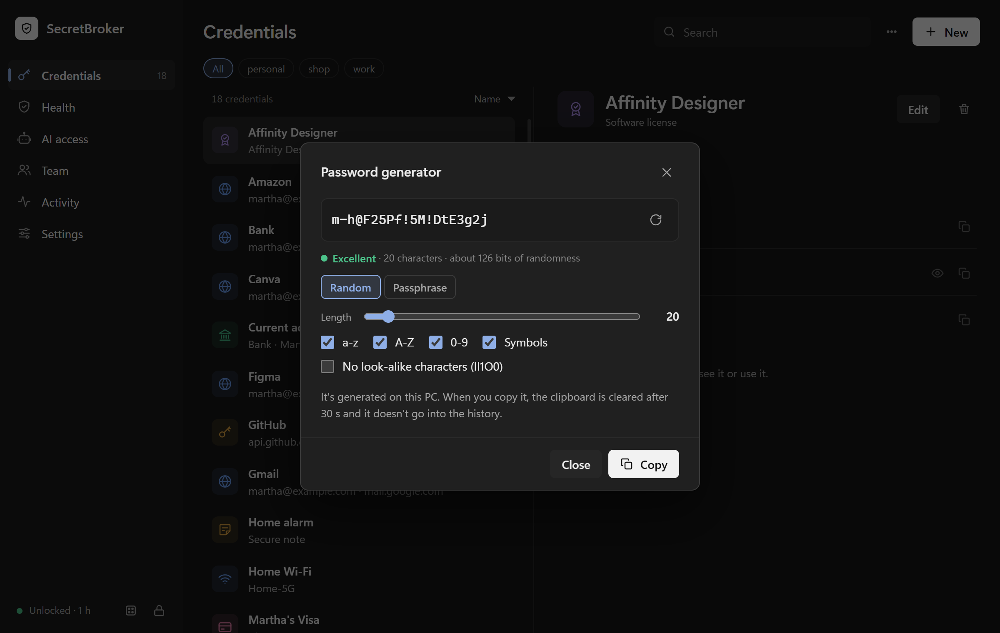
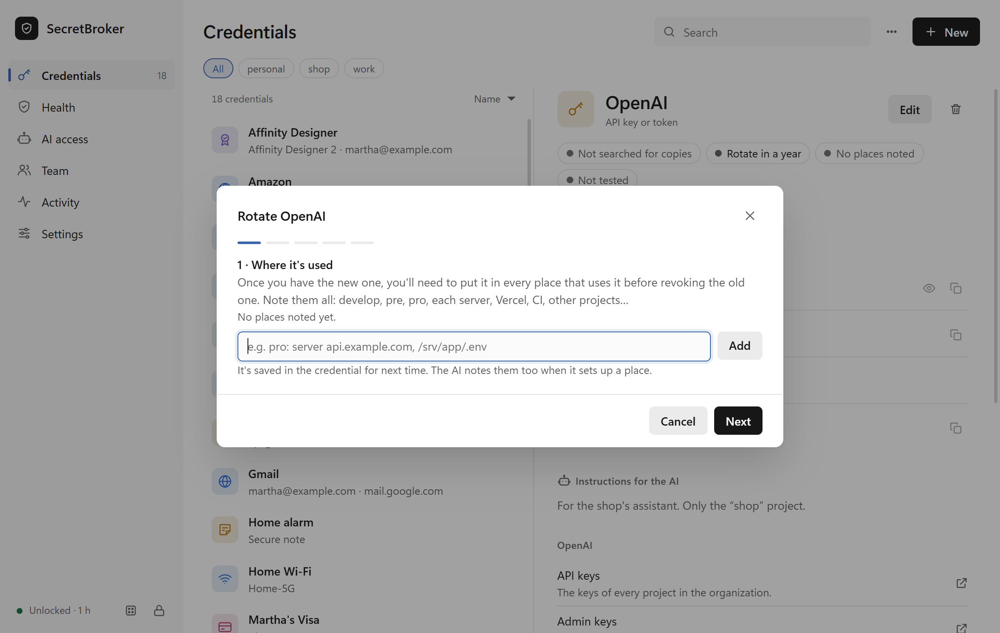
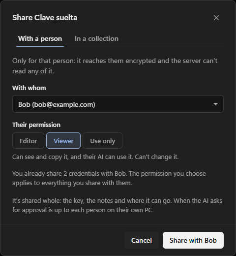

Free and open source. For Windows, Ubuntu and macOS (preview).
Your passwords and keys, used without being seen.
SecretBroker is a password manager that lives on your computer. It fills in your logins in the browser, and it lets AI assistants use your API keys and server logins without ever being able to read them.
Free, with no account to create. Your vault stays on your computer.




The idea
Your AI asks. You click once. It never sees the key.
When an AI agent needs one of your keys, SecretBroker shows you what it wants to do and exactly where the key would go. The agent gets the answer back with every secret scrubbed out.
- Just this onceFor this request only.
- Allow for 24 hoursIt stops asking about this credential while you work.
- DenyOr pause the AI altogether, from the app or the icon next to the clock.
01 For everyday passwords
Every login in one place, typed for you.
You remember one master password. SecretBroker remembers the rest, fills them in on the right website and tells you which ones are weak or have leaked.
New to password managers? Start here

Passwords and 2FA codes together
Save a login once. The six-digit code for two-step verification appears next to it, ready to copy.
Autofill in your browser
An extension for Chrome, Edge, Brave and Firefox fills in your username, password and code. Only on the site you saved them for, so a look-alike address gets nothing, and only when you ask.
Bring what you already have
Import from Chrome, Edge, Firefox, Bitwarden, 1Password or KeePass. You see the list before anything is saved.
Backups you control
A daily encrypted copy in a folder you choose. Restore it on a new PC with your master password.
A health check
A score from 0 to 100 and what to fix first: weak, reused, old or leaked passwords, each with a button to change it.
Yours to take away
Export everything to an encrypted file, or to plain CSV or JSON for another manager. Your data is never trapped.
02 For people who code with AI
Let the agent work. Keep the keys.
Coding agents need your API keys to be useful, and whatever they read can end up in a transcript. With SecretBroker the agent asks for an operation; the key is added inside a separate service and removed from everything that comes back.
The developer guide# stores the keys, writes a .secretbroker file you can commit
$ sb import .env --delete
# your app gets its variables straight from the vault
$ sb run -- npm run dev
# .secretbroker: where each variable comes from. No values.
OPENAI_API_KEY = openai
DATABASE_URL = shop-db:connection_url

Works with the agent you use
Connect Claude Code, Claude Desktop, Cursor, VS Code (Copilot), Windsurf or Codex with one click. It speaks MCP, so other clients can use it too.
Approvals that don't nag
One request per task, “Allow for 24 hours”, a limit on unusual use, and per-credential lists of the only hosts and programs a key may reach.
.envfiles into the vaultPick the file, tick its keys, done.
sb importdoes it from a terminal and never prints a value, so your agent can run it for you.sb runStart your own apps with secrets straight from the vault. The
.secretbrokerfile only names credentials, so it can live in the repository.Rotation with help
Where to create the new key, a test against the provider before the old one is replaced, a checklist of every place it is used, then proof that the old key is dead.
Leak scanning, on your machine
Looks for your keys in AI transcripts, shell history, config files, project folders and their git history, and notices when a working key stops working.
03 For teams Preview
Share a login without sending it to anyone.
Pass a credential to one colleague or put it in a shared collection: the client's hosting panel, the studio's stock-photo account, the production database. It is encrypted on your computer before it leaves, and the server in between only stores what it cannot read.
The team guide
End-to-end encrypted
The server never sees a secret, a credential's name or a collection's name. It does see e-mail addresses, organization names and who belongs to what.
Four permissions
Manager, Editor, Viewer, and Use only: their AI and programs can use the key, but the app will not show or copy it.
Your own server, one command
On an Ubuntu server, one command sets it up with HTTPS, nightly backups and signed automatic updates. After that you run it from the app. Docker works too.
When someone leaves
Their collections are re-encrypted and every credential they could see is listed for you to change, one after another.
Nobody locked out for good
Each team account gets a recovery code, and admins can let a colleague back in when everything else is lost.
A hosted server is planned
It will run the same open-source code you can host yourself, and the self-hosted server stays fully featured.
How the AI broker works
The key goes from the vault to the server. It never passes through the AI.
The same four steps every time an agent uses a credential. Here, an agent lists your open issues on GitHub.
-
The agent names a credential
AI agent
“List my open issues.”
http_request credential: github GET https://api.github.com/issues
It names the credential. It has no key to send.
SecretBroker service
Checks what you allowed for
github: HTTPS only, and onlyapi.github.com. -
SecretBroker asks you
SecretBroker service
Asks you, unless you already allowed this credential today. Approving is your click, not the agent's.
You
See the request and answer with one click.
-
The key is added inside the service
SecretBroker service
Takes the key from the encrypted vault and puts it in the request.
Authorization: Bearer
api.github.com
api.github.comreceives an ordinary signed-in request. -
The answer comes back scrubbed
api.github.com
Answers.
SecretBroker service
Removes the key from the reply if it appears there in any form: plain, base64, URL-encoded or inside JSON.
AI agent
Gets the result.
200 OK [{ "title": "Fix login", … }] "token": "[REDACTED:github]"
SSH commands, database clients and other programs work the same way: the agent names a credential and SecretBroker runs the operation. One honest limit: a program you allow with sb run or run_command receives the key in clear, so allow only the programs you need. More on the limits.
Security
What protects your secrets, and where the protection ends.
No password manager can promise everything. This is what SecretBroker does, in plain words, and what it cannot do.
What it does
- Encrypted on your computer. The vault is locked with a key made from your master password (AES-256-GCM, scrypt). Nothing is uploaded unless you join a team.
- A service apart from your programs. The part that holds your secrets runs under its own system account. Programs running as you, an AI agent included, cannot read its files, its memory or its code.
- The AI never receives a value. It asks for an operation. Replies are scrubbed, and a key only goes to the HTTPS hosts and programs you listed for it.
- You decide each use. An approval is tied to one request and confirmed by you: with Windows Hello, with a password, or with one click once you have unlocked.
- Autofill only on the real site. The extension offers a login only on the domain it was saved for, never on page load, and without opening a network port.
- Team sharing the server cannot read. Sharing is end-to-end encrypted; member lists, changes and deletions are signed by whoever made them.
- Updates are verified. The app only installs a version signed with the project's release key.
What it does not do
- No independent audit yet. The code is open and the threat model is written down, but no outside security firm has audited it.
- Your desktop is shared ground. Malware running as you can read the clipboard, record keys or show fake windows, as with any password manager. With “Open with my Windows session” turned on, any program of yours can open the vault too.
- Programs you allow get the key. Anything you start with
sb run, or let the AI start withrun_command, receives it in clear. - “Use only” is a courtesy, not a wall. The app enforces it; a teammate with a modified app could extract a key they are allowed to use.
- Administrator rights defeat the isolation. Never run an AI agent as administrator.
- It is young. The installers are not code-signed yet, the browser extension is not in the stores yet, macOS is a preview and there is no mobile app.
Download
Get SecretBroker
Free, with no account to create. It installs in a couple of minutes and updates itself with one click.
The installers are not code-signed yet, so Windows and macOS show a warning the first time. What you will see, and why.
macOS 12 or later, Apple silicon Preview
Package (.pkg) for M1 and later. Built and installed by automated tests; not yet tried on real Macs.
Download .pkgThere is no mobile app yet. The browser extension comes with the app and is loaded from its folder for now; it is not in the browser stores yet. Every release, with a signature file next to each installer, is on GitHub Releases.
Open source
Read the code that holds your passwords.
SecretBroker is MIT-licensed and developed in the open: the desktop app, the browser extension, the team server and the pipeline that builds and signs the installers.
Questions
Before you trust it with your passwords
Is it really free?
Yes. The app, the extension and the team server are free and open source under the MIT License, and you don't create an account with us. A hosted team server is planned for teams that don't want to run their own; the self-hosted one stays fully featured.
Where are my passwords stored?
In an encrypted vault on your own computer. They are not uploaded anywhere. If you join a team, only what you choose to share leaves your PC, already encrypted. The privacy page lists every connection the app makes.
Do I need to know how to program?
No. Installing is a double click, and passwords, 2FA codes, autofill, import and backups need no terminal. The AI and command-line features are there if you want them.
What if I forget my master password?
On the computer where your vault lives you can sign in with Windows Hello or your system password and choose a new one. A backup on another computer can only be opened with the master password it had, and nobody, the project included, can recover it for you. The details are in the guide.
Which AI tools does it work with?
The app connects Claude Code, Claude Desktop, Cursor, VS Code (Copilot Chat in Agent mode), Windsurf and Codex with one click. It is an MCP server, so other MCP clients can use it too.
Has it been audited?
Not by an independent security firm; that is on the roadmap. The source code, the threat model with its known limits and the release pipeline are public, and vulnerabilities can be reported in private.
Why does Windows warn me when I install it?
Because the installer is not signed with a code-signing certificate yet. Windows shows “Windows protected your PC” for programs from publishers it does not recognise. The guide shows what to click. Updates from inside the app are checked against the project's own release key.
Does it work on a Mac? On my phone?
The Mac version is a preview: it is built and installed by automated tests but has not been tried on real Macs yet, it is not signed, and Touch ID waits for the signed version. There is no mobile app; a read-only one is on the roadmap.
Can I move to another password manager later?
Yes. Settings › Import and export writes an encrypted file for another PC, or unencrypted CSV or JSON that Bitwarden, 1Password, KeePassXC and browsers can read.
Which languages does it speak?
The app, the extension and the installer are in 32 languages, English and Spanish among them. It follows your system's language, and Settings › Appearance › Language changes it. The guide on this site is in English and Spanish.